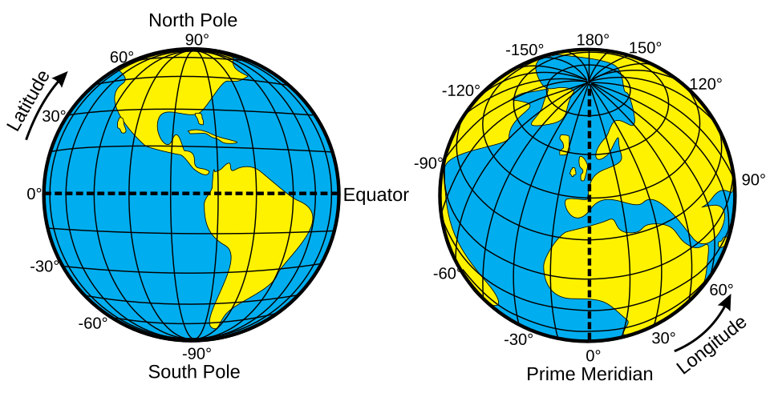

Bienvenue sur MonSite
Voici les réponse des question de l'Introduction
question 1:
L'heure UTC est l'heure de réference mondial. Elle se définit par UTC ∓ n, avec N qui represente le nombre d'heure de décalage avec le fuseau principale (fuseau de Londre). Par exemple UTC + 2 corréspond au fuseau auraire décaler de + 2h par rapport à Londre
question 2:
NMEA - National Marine & Electronics Association est un standard de communication pour les système GPS embarquée, Sous ce standard, toutes les données sont transmises sous la forme des caractères ASCII. Le terme de "Trame" désigne le fait que les donnée sont transmises sous formes de phrase/sentences. Chaque trame commence par le caractères $ suivie par un groupe de 2 lettres identifiant le récepteur puis de 3 letres indentifiant de la trame : ici nous verront la trame GGA pour GPS fixe et Date. Un total de 82 caractères maximum pour une trame.
question 3:
voici deux image representant la longitude et latitude sur le globe, à savoir que ces coordonnée s'exprime en degrè :
